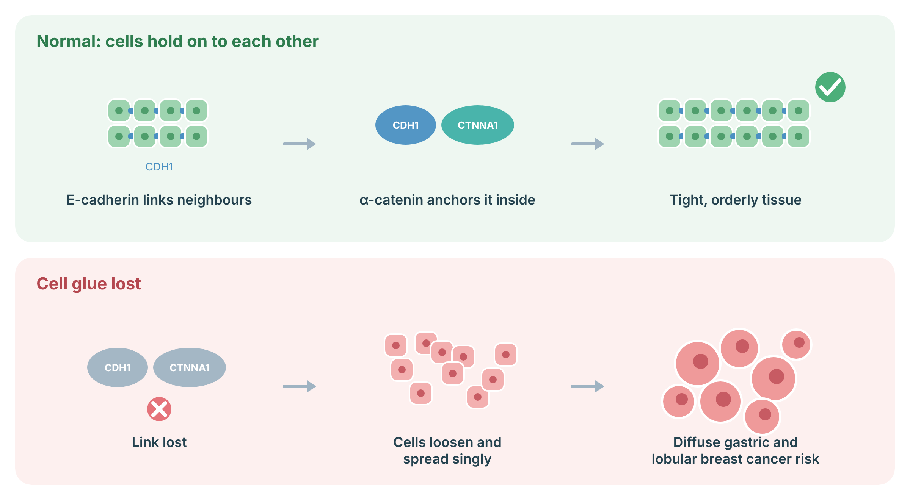
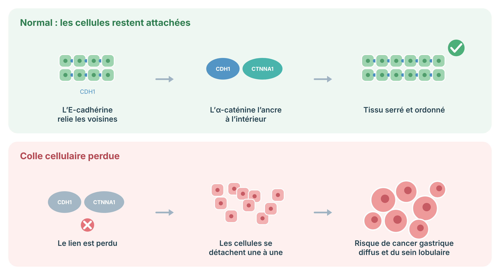

CTNNA1 Cancer Prevention and Surveillance Protocol
A bilingual, evidence-calibrated guide for people with a CTNNA1 result and for the clinicians who care for them.
Dr. Andrew Shuen, MD PhD FRCPC DABMGG — Cancer Genetics, Cancer Prevention Centre, Jewish General Hospital (JGH), Montreal
Dr. William Foulkes, MBBS PhD FRCPC — Cancer Genetics, Cancer Prevention Centre, JGH, Montreal
Dr. Polymnia Galiatsatos, MD CM FRCPC — Division of Gastroenterology, JGH, Montreal
Sude Yarar, Istanbul University Faculty of Medicine, Istanbul, Turkey
CTNNA1Diffuse gastric cancerEvidence reviewed July 21, 2026
For patients Blue panels explain the main point in plain language.
For clinicians Standard text gives variant-specific management and evidence limitations.
1
Understanding the condition
Patient summary
A disease-causing CTNNA1 variant can weaken the way cells attach to each other. This can raise the risk of diffuse stomach cancer. The risk is best established for variants that stop the gene from working. Most missense changes and variants of uncertain significance should not be managed as cancer-causing results.
CTNNA1 encodes alpha-E-catenin, a core component of the E-cadherin-catenin adherens-junction complex. Loss of alpha-E-catenin disrupts epithelial cohesion, polarity, contact inhibition, and cytoskeletal signalling. Germline heterozygous truncating variants can predispose to diffuse gastric cancer (DGC), often through a second somatic hit and loss of the remaining functional allele.
The clinically actionable cancer phenotype is currently linked most strongly to pathogenic or likely pathogenic truncating/loss-of-function variants predicted to undergo nonsense-mediated decay. The 2026 CTNNA1 spectrum study did not support treating ordinary missense variants as equivalent cancer-predisposition alleles. Separate heterozygous missense variants can cause autosomal dominant macular pattern dystrophy, a different phenotype.
Clinical interpretation rule: confirm the exact laboratory classification, molecular consequence, transcript, and whether the result is a truncating loss-of-function variant before applying this protocol.
How this pathway works
Cells in the stomach and breast lining hold on to each other with a “cell glue” protein called E-cadherin (made by CDH1), which is anchored inside the cell by α-catenin (made by CTNNA1). When this glue is lost, cells loosen and can spread one by one through the tissue, which is how diffuse gastric cancer and lobular breast cancer grow.
CTNNA1: CTNNA1 makes α-catenin, which anchors E-cadherin inside the cell; losing it has a similar effect to losing CDH1.

Sources: Majewski IJ, et al. J Pathol 2013;229:621–9 (PubMed).
2
Lifetime risks by variant subtype
Patient summary
The exact CTNNA1 cancer risk is still uncertain. Some selected families have had high rates of stomach cancer. Larger laboratory cohorts suggest a lower, moderate risk. Family history changes how strongly we recommend surgery.
Variant or clinical subgroup
Approximate risk
Evidence and interpretation
Pathogenic/likely pathogenic truncating or loss-of-function CTNNA1 variant
Moderate, imprecise DGC estimates reported from about 7% in broad testing cohorts to roughly 49-57% in highly selected HDGC families.
Ascertainment strongly affects estimates. The 2026 study found about a sevenfold gastric-cancer risk relative to noncarriers, lower than for truncating CDH1 variants. Do not present 49-57% as a universal penetrance value.
Same variant plus a family history of confirmed DGC or lobular breast cancer
Higher clinical concern
Absolute risk is not precisely quantified. Family history, age of onset, pathology, and repeated biopsy findings guide the choice between surveillance and gastrectomy.
Breast cancer in female carriers
Possible increase; absolute risk unknown
Association with lobular breast cancer is emerging but much weaker and less certain than for CDH1. No reliable CTNNA1-specific lifetime percentage is available.
Missense variant or VUS without independent evidence of loss of function
Not established
Do not use the variant alone to justify gastrectomy or high-risk breast screening. Manage by personal and family history while awaiting reclassification.
May cause autosomal dominant macular pattern dystrophy. A cancer association is not established merely because the variant is pathogenic for eye disease.
Risk ranges are approximate and are not interchangeable across ascertainment settings. DGC means diffuse gastric cancer; HDGC means hereditary diffuse gastric cancer.
3
Pathogenic truncating or loss-of-function CTNNA1 variants
Patient summary
Care should be coordinated through a centre with experience in hereditary diffuse gastric cancer. Most people need expert upper endoscopy every 6 to 12 months. Surgery is considered more strongly when the family has diffuse stomach cancer or when biopsies find signet-ring cells.
CTNNA1 truncating/LoF pathogenic or likely pathogenic variantActionable, moderate-risk evidence
Gastric surveillance checklist
Refer to an HDGC-expert program.Routine Surveillance should be performed by an endoscopist and pathologist familiar with subtle signet-ring-cell foci.
Baseline high-quality upper endoscopy.Routine Use a careful examination lasting at least 30 minutes, extensive washing and insufflation, targeted biopsies of every abnormal area, then systematic random biopsies using a validated Cambridge or Bethesda-style protocol.
Repeat every 6 to 12 months.Routine Begin in early adulthood, commonly at age 18 to 20, or 5 to 10 years before the earliest confirmed gastric cancer in the family. GeneReviews lists age 40 for unclear-risk situations; for a confirmed truncating CTNNA1 variant, many expert centres begin in early adulthood. Individualize the exact start age.
Test for and eradicate Helicobacter pylori.Routine Confirm eradication with a non-serologic test after treatment.
Expert pathology review.Routine Any signet-ring-cell finding should be reviewed by a gastrointestinal pathologist experienced in HDGC.
Do not rely on symptoms, CT, PET, serum markers, or routine ultrasound for screening.Not recommended Early intramucosal disease is often microscopic and may not form a mass.
Limit of endoscopy: even intensive protocols can miss microscopic foci. A negative endoscopy lowers immediate concern but does not remove future risk.
Breast surveillance
For women with a CTNNA1 truncating pathogenic variant, the breast-risk evidence remains insufficient for a universal gene-only MRI recommendation. Use a validated breast-risk model and the personal/family history. If there is lobular breast cancer or a calculated lifetime breast-cancer risk at or above the local MRI threshold, refer to a high-risk breast program. GeneReviews suggests annual MRI from age 30 for CTNNA1 carriers with a personal or family history of breast cancer. Follow provincial or national screening guidance for those below a high-risk threshold.
Other organs
There is no established CTNNA1-specific screening for colorectal, pancreatic, ovarian, prostate, thyroid, or hematologic malignancy. Use population screening and family-history-based pathways.
4
Missense variants and variants of uncertain significance
Patient summary
A VUS is not a diagnosis. It should not lead to stomach removal or extra cancer screening by itself. Care should follow the person’s own history and the cancers confirmed in the family.
Missense variant or VUSUsually non-actionable for cancer
No prophylactic gastrectomy based on a VUS alone.Not recommended
No predictive testing of relatives for medical decision-making based on a VUS.Not recommended
Review family pathology and pedigree.Routine If the family independently meets HDGC-like criteria, endoscopic surveillance may be indicated because of the family history, not because of the VUS.
Arrange periodic variant reinterpretation.Routine Recheck the laboratory classification when new segregation, functional, or population data become available.
Consider ophthalmology only for a known macular-dystrophy-associated variant or visual symptoms.Conditional
5
Risk-reducing surgery
Patient summary
Removing the whole stomach can prevent future stomach cancer, but it causes lifelong nutritional and digestive changes. For CTNNA1, surgery is not automatic. The decision depends on the exact variant, family history, biopsy results, age, health, and personal values.
Total gastrectomy
Discuss, do not reflexively mandate. Prophylactic total gastrectomy is an option from early adulthood for a truncating CTNNA1 pathogenic variant when there is a family history of DGC and/or lobular breast cancer. It becomes more compelling after confirmed signet-ring-cell carcinoma on surveillance biopsies, particularly if repeated, multifocal, concerning histologically, or accompanied by a strong family history. In a carrier with no DGC family history and repeatedly negative expert endoscopies, intensive surveillance is commonly preferred.
Before surgery: obtain a baseline expert endoscopy, multidisciplinary review, nutrition assessment, and counselling about morbidity, mortality, weight loss, dumping, altered medication absorption, micronutrient deficiency, fertility timing, and quality of life.
After total gastrectomy, provide lifelong follow-up for weight, hydration, iron, ferritin, vitamin B12, folate, vitamin D, calcium, parathyroid hormone, thiamine when clinically indicated, bone density, and symptoms of dumping or malabsorption. Use non-oral contraception if absorption is a concern. Delay pregnancy about 6 to 12 months after surgery to allow weight and nutritional stabilization.
Risk-reducing mastectomy
There is insufficient CTNNA1-specific evidence to routinely recommend bilateral risk-reducing mastectomy. Consider it only through individualized breast-risk assessment, such as a very strong lobular breast cancer pedigree, prior high-risk lesion, or independently high calculated lifetime risk.
6
Medical prevention and H. pylori
Patient summary
There is no proven medicine that prevents CTNNA1-related stomach cancer. Testing for H. pylori and treating it is sensible because it is a separate cause of stomach cancer and inflammation.
H. pylori test-and-treat.Routine Use local first-line eradication regimens and confirm cure at least four weeks after antibiotics and after withholding proton-pump inhibitors as required for the chosen test.
Aspirin.Not established No evidence supports aspirin specifically for CTNNA1-related cancer prevention. Do not prescribe solely for this indication. Use standard cardiovascular or other indications after bleeding-risk assessment.
Proton-pump inhibitors, antioxidants, supplements, metformin, or statins.Not established No agent has proven preventive efficacy for CTNNA1-associated DGC.
7
Genetic counselling
Patient summary
CTNNA1 cancer predisposition is usually inherited in an autosomal dominant way. Each child of a person with a confirmed pathogenic variant has a 50% chance of inheriting it. Relatives should be offered testing for the exact family variant.
Construct a three-generation pedigree and verify gastric and breast cancer histology whenever possible. Distinguish diffuse from intestinal gastric cancer and lobular from ductal breast cancer.
Offer targeted cascade testing to adult first-degree relatives and then extend through the family. Testing before age 18 is usually deferred because management generally begins in adulthood, unless an unusually early cancer in the family changes the plan.
Do not use a VUS for predictive testing or irreversible prevention decisions.
Discuss reduced and variable penetrance. A parent may carry the variant without cancer.
Discuss reproductive options, including natural conception, prenatal diagnosis, and IVF with preimplantation genetic testing for monogenic disease.
Coordinate psychosocial support. Surveillance and gastrectomy decisions can cause substantial anxiety and decisional conflict.
Patient resource: BRCA 2027. The 11th International Symposium on Hereditary Breast and Ovarian Cancer (BRCA 2027) takes place in Montréal on May 17–20, 2027. It includes a one-day public conference for gene carriers, at-risk individuals and their families on Tuesday, May 18, 2027 (in person or live-streamed), covering cancer risks, surveillance and risk-reduction options, sexuality and intimacy, and coping.
8
Lifestyle and nutrition
Patient summary
Healthy habits cannot cancel inherited risk, but they can support general health and may reduce other stomach-cancer risks. Avoid smoking, maintain a healthy weight, eat less heavily salted and processed meat, and seek care for persistent symptoms.
Recommend tobacco avoidance, moderation or avoidance of alcohol, regular physical activity, a dietary pattern rich in vegetables, fruit, legumes, and whole grains, and reduced intake of salt-preserved foods and processed meat. These measures are supportive, not substitutes for endoscopy or surgery.
Before and after gastrectomy, involve a dietitian familiar with total gastrectomy. Use small frequent meals, separate fluids from meals when needed, prioritize protein and energy density, and monitor for early and late dumping. Persistent early satiety, weight loss, dysphagia, vomiting, anemia, abdominal pain, melena, or a new breast change requires clinical assessment rather than waiting for the next scheduled visit.
9
CTNNA1-associated macular pattern dystrophy
Patient summary
Some specific CTNNA1 missense variants cause a retinal condition rather than a cancer syndrome. People with a known eye-disease variant or new central vision symptoms should see ophthalmology.
Heterozygous missense variants in CTNNA1 have been associated with autosomal dominant butterfly-shaped or other macular pattern dystrophy. This is genetically and clinically distinct from the truncating-variant cancer phenotype. Refer for a dilated retinal examination, optical coherence tomography, fundus autofluorescence, and counselling when the variant is known to be ocular-disease-associated or when there are symptoms such as central blur, distortion, or difficulty adapting to light.
Routine ophthalmic screening for every truncating cancer-predisposition variant is not established.
10
If gastric or breast cancer develops
Patient summary
A cancer diagnosis should be treated by the usual multidisciplinary cancer team. The inherited result helps with surgery, family testing, and research options, but it does not yet select a standard CTNNA1-specific drug.
For DGC, stage and treat according to contemporary gastric-cancer guidelines. Ensure expert pathology and germline documentation. Tumour testing should follow standard indications, including mismatch-repair/MSI, HER2, PD-L1, CLDN18.2, and other biomarkers relevant to the disease stage and jurisdiction. CTNNA1 status alone does not currently define an approved targeted therapy.
For lobular breast cancer, treat according to stage, receptor status, and standard breast-oncology guidance. Discuss contralateral risk and surgery using the overall clinical context rather than assuming CDH1-level risk.
11
Emerging and investigational prevention
Patient summary
New endoscopy tools and blood or tissue tests are being studied. They should be used in research settings and should not replace expert endoscopy or established surgery discussions.
Trial-only or investigational:
Probe-based confocal laser endomicroscopy and advanced optical imaging to detect microscopic signet-ring-cell foci.
Artificial-intelligence-assisted endoscopic or pathology detection.
Gastric fluid, circulating tumour DNA, methylation, or other molecular biomarkers.
Variant-specific penetrance models that integrate family history and functional data.
Preventive immunologic or microenvironment-directed strategies. No preventive immunotherapy is established.
When feasible, offer registry participation or an HDGC natural-history study. Research should not delay clinically indicated evaluation.
12
Summary of recommendations
Patient summary
The most important steps are to confirm the exact variant, review the family history, use an expert stomach-surveillance program, treat H. pylori, and make surgery decisions through shared decision-making.
Truncating pathogenic variant
HDGC-expert referral. Baseline endoscopy and repeat every 6-12 months, generally from early adulthood or 5-10 years before the earliest family DGC. Test and eradicate H. pylori.
Gastrectomy decision
Discuss when DGC/LBC is present in the family. Recommend more strongly when signet-ring cells are detected or family risk is compelling. Surveillance is reasonable for lower-risk contexts.
Breast care
Use personal/family history and formal risk assessment. Consider MRI from age 30 when breast cancer is present in the personal or family history or when the local high-risk threshold is met.
Missense or VUS
No gene-based gastrectomy or intensified screening. Manage by phenotype and family history. Reassess classification over time.
Family
Autosomal dominant inheritance. Offer targeted testing for the familial pathogenic variant. Discuss reproductive options.
Across all groups
Population screening for unrelated cancers, healthy lifestyle, symptom awareness, and multidisciplinary support.
13
References
Patient summary
These sources include the main international clinical guideline, current expert synthesis, and key CTNNA1 studies. The reference list should be updated before publication.
Blair VR, McLeod M, Carneiro F, et al. Hereditary diffuse gastric cancer: updated clinical practice guidelines. Lancet Oncology. 2020;21:e386-e397.
Barbosa-Matos R, et al. Diffuse Gastric and Lobular Breast Cancer Syndrome. GeneReviews®. Initial posting 2024; updated online. University of Washington, Seattle.
Lobo S, et al. Hereditary diffuse gastric cancer spectrum associated with CTNNA1 truncating variants. Gut. 2026;75:872-884.
Lobo S, et al. Cancer predisposition and germline CTNNA1 variants. European Journal of Medical Genetics. 2021;64:104316.
Clark DF, Michalski ST, Tondon R, et al. Loss-of-function variants in CTNNA1 detected on multigene panel testing in individuals with gastric or breast cancer. Genetics in Medicine. 2020;22:840-846.
Majewski IJ, Kluijt I, Cats A, et al. An alpha-E-catenin (CTNNA1) mutation in hereditary diffuse gastric cancer. Journal of Pathology. 2013;229:621-629.
Mi EZ, Mi EZ, di Pietro M, et al. Comparative study of endoscopic surveillance in hereditary diffuse gastric cancer according to CDH1 mutation status. Gastrointestinal Endoscopy. 2018;87:408-418.
Jacobs MF, Dust H, Koeppe E, et al. Outcomes of endoscopic surveillance in individuals with germline CDH1 variants. Gastroenterology. 2019;157:87-96.
Saksens NTM, Krebs MP, Schoenmaker-Koller FE, et al. Mutations in CTNNA1 cause butterfly-shaped pigment dystrophy and perturbed retinal pigment epithelium integrity. Nature Genetics. 2016;48:144-151.
Tanner A, Chan HW, Pulido JS, et al. Clinical and Genetic Findings in CTNNA1-Associated Macular Pattern Dystrophy. Ophthalmology. 2021;128:952-955.
National Cancer Institute. Hereditary Diffuse Gastric Cancer (PDQ®): Health Professional Version. Updated 2024 and subsequently maintained online.
Protocole clinique de prévention
Protocole de prévention et de surveillance du cancer lié à CTNNA1
Guide bilingue, nuancé selon les données probantes, pour les personnes ayant un résultat CTNNA1 et les professionnels qui les suivent.
Dr Andrew Shuen, MD PhD FRCPC DABMGG — Génétique du cancer, Centre de prévention du cancer, Hôpital général juif (HGJ), Montréal
Dr William Foulkes, MBBS PhD FRCPC — Génétique du cancer, Centre de prévention du cancer, HGJ, Montréal
Dre Polymnia Galiatsatos, MD CM FRCPC — Division de gastroentérologie, HGJ, Montréal
Sude Yarar, Faculté de médecine de l’Université d’Istanbul, Istanbul, Turquie
CTNNA1Cancer gastrique diffusDonnées révisées le 21 juillet 2026
Pour les patients Les encadrés bleus résument les points essentiels en langage clair.
Pour les cliniciens Le texte courant précise la prise en charge selon le variant et les limites des données.
1
Comprendre la condition
Résumé pour les patients
Un variant pathogène de CTNNA1 peut affaiblir l’adhésion entre les cellules. Cela peut augmenter le risque de cancer gastrique diffus. Le risque est surtout démontré pour les variants qui empêchent le gène de fonctionner. La plupart des variants faux-sens et les variants de signification incertaine ne doivent pas être pris en charge comme des résultats causant le cancer.
CTNNA1 code l’alpha-E-caténine, un élément central du complexe d’adhérence E-cadhérine-caténine. La perte d’alpha-E-caténine perturbe la cohésion épithéliale, la polarité, l’inhibition de contact et la signalisation du cytosquelette. Des variants germinaux hétérozygotes tronquants peuvent prédisposer au cancer gastrique diffus (CGD), souvent après un second événement somatique qui inactive l’allèle fonctionnel restant.
Le phénotype cancéreux cliniquement actionnable est actuellement lié surtout aux variants pathogènes ou probablement pathogènes tronquants ou avec perte de fonction, notamment ceux prévus pour entraîner une dégradation de l’ARNm par non-sens. L’étude de 2026 n’appuie pas une prise en charge des variants faux-sens ordinaires comme s’ils avaient le même risque. Certains variants faux-sens hétérozygotes distincts causent plutôt une dystrophie maculaire en motif autosomique dominante.
Règle d’interprétation clinique : confirmer la classification du laboratoire, la conséquence moléculaire, le transcrit et le caractère tronquant ou avec perte de fonction avant d’appliquer ce protocole.
Comment fonctionne cette voie
Les cellules de la muqueuse de l’estomac et du sein restent attachées grâce à une protéine « colle », l’E-cadhérine (produite par CDH1), ancrée à l’intérieur de la cellule par l’α-caténine (produite par CTNNA1). Quand cette colle est perdue, les cellules se détachent et peuvent se propager une à une dans le tissu, ce qui correspond au mode de croissance du cancer gastrique diffus et du cancer du sein lobulaire.
CTNNA1: CTNNA1 produit l’α-caténine, qui ancre l’E-cadhérine à l’intérieur de la cellule; sa perte a un effet semblable à celle de CDH1.

Sources : Majewski IJ, et al. J Pathol 2013;229:621–9 (PubMed).
2
Risques à vie selon le type de variant
Résumé pour les patients
Le risque exact de cancer lié à CTNNA1 demeure incertain. Certaines familles sélectionnées ont eu beaucoup de cancers gastriques. Les grandes cohortes de laboratoires suggèrent un risque plus faible et modéré. Les antécédents familiaux influencent fortement la discussion sur la chirurgie.
Sous-groupe
Risque approximatif
Interprétation
Variant CTNNA1 pathogène ou probablement pathogène tronquant ou avec perte de fonction
Modéré, imprécis Estimations de CGD allant d’environ 7 % dans de larges cohortes de tests à environ 49-57 % dans des familles HDGC très sélectionnées.
Le mode de recrutement modifie fortement les estimations. L’étude de 2026 a trouvé un risque de cancer gastrique environ sept fois plus élevé que chez les non-porteurs, mais inférieur à celui des variants tronquants de CDH1. Le chiffre de 49-57 % ne doit pas être présenté comme une pénétrance universelle.
Même variant avec antécédents familiaux de CGD confirmé ou de cancer lobulaire du sein
Préoccupation clinique plus élevée
Le risque absolu n’est pas quantifié avec précision. L’histoire familiale, l’âge au diagnostic, la pathologie et les biopsies orientent le choix entre surveillance et gastrectomie.
Cancer du sein chez les femmes porteuses
Hausse possible; risque absolu inconnu
L’association avec le cancer lobulaire du sein est émergente, mais beaucoup plus faible et moins certaine que pour CDH1. Aucun pourcentage à vie propre à CTNNA1 n’est fiable.
Variant faux-sens ou VUS sans preuve indépendante de perte de fonction
Non établi
Ne pas utiliser le variant seul pour justifier une gastrectomie ou un dépistage mammaire intensif. Prendre en charge selon l’histoire personnelle et familiale.
Variant faux-sens pathogène pour une dystrophie maculaire
Phénotype oculaire
Peut causer une dystrophie maculaire en motif autosomique dominante. Une association au cancer n’est pas établie du seul fait que le variant est pathogène pour l’œil.
Ces plages sont approximatives et ne sont pas interchangeables entre les populations étudiées.
3
Variants pathogènes tronquants ou avec perte de fonction
Résumé pour les patients
Les soins devraient être coordonnés par un centre expérimenté en cancer gastrique diffus héréditaire. La plupart des personnes ont besoin d’une endoscopie experte tous les 6 à 12 mois. La chirurgie est davantage envisagée lorsque la famille compte des cancers gastriques diffus ou lorsque les biopsies montrent des cellules en bague à chaton.
Variant CTNNA1 tronquant ou avec perte de fonction pathogène/probablement pathogèneActionnable, données de risque modéré
Surveillance gastrique
Référence à un programme expert en HDGC.Routine L’endoscopiste et le pathologiste doivent connaître les foyers subtils de cellules en bague à chaton.
Endoscopie digestive haute initiale de grande qualité.Routine Examen minutieux d’au moins 30 minutes, lavage et insufflation, biopsies ciblées de toute anomalie, puis biopsies systématiques selon un protocole de type Cambridge ou Bethesda.
Répéter tous les 6 à 12 mois.Routine Commencer au début de l’âge adulte, souvent vers 18-20 ans, ou 5 à 10 ans avant le plus jeune cancer gastrique confirmé dans la famille. GeneReviews mentionne 40 ans dans les situations où le risque est incertain. L’âge exact doit être individualisé.
Rechercher et éradiquer Helicobacter pylori.Routine Confirmer l’éradication par un test non sérologique.
Révision par un pathologiste expert.Routine Toute cellule en bague à chaton devrait être revue par un pathologiste gastro-intestinal connaissant l’HDGC.
Ne pas utiliser les symptômes, la TDM, la TEP, les marqueurs sériques ou l’échographie comme dépistage principal.Non recommandé
Limite de l’endoscopie : même un protocole intensif peut manquer des foyers microscopiques. Une endoscopie négative ne supprime pas le risque futur.
Surveillance mammaire
Chez les femmes porteuses d’un variant tronquant pathogène, les données sont insuffisantes pour recommander une IRM uniquement sur la base du gène dans tous les cas. Utiliser un modèle validé et l’histoire personnelle et familiale. En présence de cancer lobulaire du sein dans la famille ou d’un risque calculé dépassant le seuil local d’IRM, référer à un programme mammaire à haut risque. GeneReviews propose une IRM annuelle dès 30 ans chez les porteuses de CTNNA1 ayant des antécédents personnels ou familiaux de cancer du sein.
Autres organes
Aucun dépistage propre à CTNNA1 n’est établi pour les cancers colorectal, pancréatique, ovarien, prostatique, thyroïdien ou hématologique. Suivre les programmes populationnels et l’histoire familiale.
4
Variants faux-sens et variants de signification incertaine
Résumé pour les patients
Un VUS n’est pas un diagnostic. Il ne doit pas mener à une ablation de l’estomac ni à un dépistage accru à lui seul. Les soins dépendent de l’histoire personnelle et des cancers confirmés dans la famille.
Variant faux-sens ou VUSHabituellement non actionnable pour le cancer
Pas de gastrectomie prophylactique fondée sur un VUS seul.Non recommandé
Pas de test prédictif des proches pour guider des décisions médicales à partir d’un VUS.Non recommandé
Réviser la pathologie familiale et le pedigree.Routine Si la famille satisfait indépendamment aux critères HDGC-like, une surveillance peut être indiquée en raison de l’histoire familiale, et non du VUS.
Prévoir une réinterprétation périodique.Routine
Envisager l’ophtalmologie pour un variant connu de dystrophie maculaire ou des symptômes visuels.Conditionnel
5
Chirurgie de réduction du risque
Résumé pour les patients
L’ablation complète de l’estomac peut prévenir un futur cancer gastrique, mais elle entraîne des changements digestifs et nutritionnels permanents. Pour CTNNA1, la chirurgie n’est pas automatique. La décision dépend du variant, de l’histoire familiale, des biopsies, de l’âge, de la santé et des préférences.
Gastrectomie totale
Discuter, sans imposer automatiquement. Une gastrectomie totale prophylactique est une option dès le début de l’âge adulte lorsqu’un variant tronquant pathogène est associé à des antécédents familiaux de CGD et/ou de cancer lobulaire du sein. Elle devient plus convaincante après la détection confirmée de cellules en bague à chaton, surtout si elles sont répétées, multifocales ou associées à une histoire familiale forte. Chez une personne sans CGD familial et avec des endoscopies expertes négatives répétées, une surveillance intensive est souvent privilégiée.
Avant la chirurgie : endoscopie experte, discussion multidisciplinaire, évaluation nutritionnelle et information sur la morbidité, la mortalité, la perte de poids, le syndrome de chasse, l’absorption des médicaments, les carences, la fertilité et la qualité de vie.
Après la gastrectomie, assurer un suivi à vie du poids, de l’hydratation, du fer, de la ferritine, de la vitamine B12, du folate, de la vitamine D, du calcium, de la parathormone, de la thiamine selon le contexte, de la densité osseuse et des symptômes de malabsorption. Privilégier une contraception non orale si l’absorption est incertaine. Reporter une grossesse d’environ 6 à 12 mois.
Mastectomie de réduction du risque
Les données propres à CTNNA1 sont insuffisantes pour recommander systématiquement une mastectomie bilatérale. L’envisager seulement après une évaluation individualisée du risque mammaire.
6
Prévention médicale et H. pylori
Résumé pour les patients
Aucun médicament ne prévient de façon démontrée le cancer gastrique lié à CTNNA1. Le dépistage et le traitement de H. pylori sont raisonnables, car cette bactérie est une cause distincte de cancer gastrique et d’inflammation.
Dépister et traiter H. pylori.Routine Utiliser les schémas locaux de première intention et confirmer la guérison après le traitement.
Aspirine.Non établi Aucune donnée ne justifie l’aspirine spécifiquement pour CTNNA1. Ne pas la prescrire pour cette seule indication.
IPP, antioxydants, suppléments, metformine ou statines.Non établi Aucun agent n’a démontré une efficacité préventive.
7
Conseil génétique
Résumé pour les patients
La prédisposition liée à CTNNA1 est généralement autosomique dominante. Chaque enfant d’une personne ayant un variant pathogène confirmé a 50 % de probabilité de l’hériter. Les proches devraient se voir offrir un test ciblé pour le variant familial exact.
Construire un pedigree sur trois générations et confirmer l’histologie des cancers gastriques et mammaires.
Offrir un test en cascade ciblé aux apparentés adultes du premier degré, puis étendre dans la famille.
Reporter habituellement le test prédictif avant 18 ans, sauf contexte familial exceptionnel.
Ne pas utiliser un VUS pour un test prédictif ou une décision irréversible.
Expliquer la pénétrance réduite et variable.
Discuter de la conception naturelle, du diagnostic prénatal et de la FIV avec test génétique préimplantatoire.
Offrir un soutien psychosocial pour les décisions de surveillance et de chirurgie.
Ressource pour les patients : BRCA 2027. Le 11e Symposium international sur le cancer héréditaire du sein et de l’ovaire (BRCA 2027) a lieu à Montréal du 17 au 20 mai 2027. Il comprend une conférence publique d’une journée pour les personnes porteuses, les personnes à risque et leurs familles, le mardi 18 mai 2027 (en personne ou en webdiffusion), sur les risques de cancer, la surveillance et les options de réduction du risque, la sexualité et l’intimité, et l’adaptation psychologique.
8
Mode de vie et nutrition
Résumé pour les patients
Les habitudes de vie ne peuvent pas annuler le risque héréditaire, mais elles soutiennent la santé générale. Éviter le tabac, maintenir un poids sain, réduire les aliments très salés et les viandes transformées, et consulter en cas de symptômes persistants.
Recommander l’absence de tabac, la modération de l’alcool, l’activité physique régulière et une alimentation riche en légumes, fruits, légumineuses et grains entiers, avec moins d’aliments conservés au sel et de viandes transformées. Ces mesures ne remplacent ni l’endoscopie ni la chirurgie.
Avant et après une gastrectomie, impliquer une diététiste connaissant la gastrectomie totale. Privilégier de petits repas fréquents et surveiller le syndrome de chasse, les carences et la perte de poids. Une satiété précoce persistante, une dysphagie, des vomissements, une anémie, un méléna ou un changement mammaire nécessite une évaluation clinique.
9
Dystrophie maculaire en motif associée à CTNNA1
Résumé pour les patients
Certains variants faux-sens précis de CTNNA1 causent une maladie de la rétine plutôt qu’un syndrome de cancer. Une personne ayant un variant oculaire connu ou de nouveaux symptômes de vision centrale devrait consulter en ophtalmologie.
Des variants faux-sens hétérozygotes de CTNNA1 sont associés à une dystrophie maculaire en ailes de papillon ou à d’autres dystrophies en motif autosomiques dominantes. Ce phénotype est distinct du phénotype cancéreux lié aux variants tronquants. Référer pour un examen rétinien dilaté, une tomographie en cohérence optique et une autofluorescence du fond d’œil lorsque le variant est connu pour être oculaire ou lorsqu’il existe une vision centrale brouillée ou déformée.
Un dépistage ophtalmologique systématique pour tous les variants tronquants n’est pas établi.
10
Si un cancer gastrique ou mammaire survient
Résumé pour les patients
Le cancer doit être traité par l’équipe multidisciplinaire habituelle. Le résultat héréditaire aide à planifier la chirurgie, les tests familiaux et les options de recherche, mais ne sélectionne pas encore un médicament standard propre à CTNNA1.
Pour le CGD, stadifier et traiter selon les lignes directrices contemporaines du cancer gastrique. Obtenir une pathologie experte. Les biomarqueurs tumoraux doivent suivre les indications standards, dont MMR/MSI, HER2, PD-L1, CLDN18.2 et les autres marqueurs pertinents selon le stade. Le statut CTNNA1 seul ne définit pas de thérapie ciblée approuvée.
Pour le cancer lobulaire du sein, traiter selon le stade, les récepteurs et les lignes directrices usuelles. Discuter du risque controlatéral sans présumer un risque équivalent à CDH1.
11
Prévention émergente et expérimentale
Résumé pour les patients
De nouveaux outils endoscopiques et des tests sanguins ou tissulaires sont à l’étude. Ils devraient rester dans le cadre de la recherche et ne pas remplacer l’endoscopie experte ou la discussion sur la chirurgie.
Réservé aux essais ou expérimental :
Endomicroscopie confocale et imagerie optique avancée.
Assistance par intelligence artificielle en endoscopie ou en pathologie.
Biomarqueurs dans le liquide gastrique, l’ADN tumoral circulant ou la méthylation.
Modèles de pénétrance intégrant l’histoire familiale et les données fonctionnelles.
Offrir une participation à un registre ou à une étude d’histoire naturelle lorsque possible, sans retarder les soins indiqués.
12
Résumé des recommandations
Résumé pour les patients
Les étapes essentielles sont de confirmer le variant exact, réviser l’histoire familiale, utiliser un programme expert de surveillance gastrique, traiter H. pylori et décider de la chirurgie par décision partagée.
Variant tronquant pathogène
Référence HDGC, endoscopie initiale puis tous les 6-12 mois, généralement dès le début de l’âge adulte ou 5-10 ans avant le plus jeune CGD familial. Dépister et traiter H. pylori.
Décision de gastrectomie
Discuter en présence de CGD ou de cancer lobulaire familial. Recommander plus fortement si des cellules en bague à chaton sont détectées.
Sein
Utiliser l’histoire personnelle et familiale et une estimation formelle du risque. Envisager l’IRM dès 30 ans lorsque l’histoire familiale ou le seuil local de haut risque le justifie.
Variant faux-sens ou VUS
Pas de gastrectomie ni de dépistage intensif fondé sur le gène. Réinterpréter avec le temps.
Famille
Transmission autosomique dominante. Offrir un test ciblé du variant familial et discuter des options reproductives.
Pour tous
Dépistage populationnel des autres cancers, habitudes de vie saines, vigilance aux symptômes et soutien multidisciplinaire.
13
Références
Résumé pour les patients
Ces sources comprennent la principale ligne directrice internationale, une synthèse clinique récente et les études clés sur CTNNA1. La liste doit être mise à jour avant publication.
Blair VR, McLeod M, Carneiro F, et al. Hereditary diffuse gastric cancer: updated clinical practice guidelines. Lancet Oncology. 2020;21:e386-e397.
Barbosa-Matos R, et al. Diffuse Gastric and Lobular Breast Cancer Syndrome. GeneReviews®. Initial posting 2024; updated online. University of Washington, Seattle.
Lobo S, et al. Hereditary diffuse gastric cancer spectrum associated with CTNNA1 truncating variants. Gut. 2026;75:872-884.
Lobo S, et al. Cancer predisposition and germline CTNNA1 variants. European Journal of Medical Genetics. 2021;64:104316.
Clark DF, Michalski ST, Tondon R, et al. Loss-of-function variants in CTNNA1 detected on multigene panel testing in individuals with gastric or breast cancer. Genetics in Medicine. 2020;22:840-846.
Majewski IJ, Kluijt I, Cats A, et al. An alpha-E-catenin (CTNNA1) mutation in hereditary diffuse gastric cancer. Journal of Pathology. 2013;229:621-629.
Mi EZ, Mi EZ, di Pietro M, et al. Comparative study of endoscopic surveillance in hereditary diffuse gastric cancer according to CDH1 mutation status. Gastrointestinal Endoscopy. 2018;87:408-418.
Jacobs MF, Dust H, Koeppe E, et al. Outcomes of endoscopic surveillance in individuals with germline CDH1 variants. Gastroenterology. 2019;157:87-96.
Saksens NTM, Krebs MP, Schoenmaker-Koller FE, et al. Mutations in CTNNA1 cause butterfly-shaped pigment dystrophy and perturbed retinal pigment epithelium integrity. Nature Genetics. 2016;48:144-151.
Tanner A, Chan HW, Pulido JS, et al. Clinical and Genetic Findings in CTNNA1-Associated Macular Pattern Dystrophy. Ophthalmology. 2021;128:952-955.
National Cancer Institute. Hereditary Diffuse Gastric Cancer (PDQ®): Health Professional Version. Updated 2024 and subsequently maintained online.